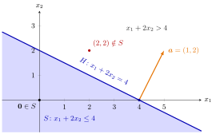

Halfspace¶
Definition¶
Let and . The hyperplane , with normal vector , is the level set of at level . The sublevel and superlevel sets of at level , strict or not, are called halfspaces: the closed halfspaces
and the strict (open) halfspaces
Interpretation¶
A hyperplane cuts into two sides, and a halfspace is one of those sides, with or without the hyperplane itself. Algebraically it is the solution set of a single linear inequality, the kind of constraint met in OR Modelling.

The figure draws Example 1. The line passes through and , and the shaded side is , which contains the origin. The normal vector , drawn from , points into the other side , where lies with .
The normal vector points into the side where : for and , . So is the side that points away from. The pair is not unique: with describes the same halfspace, while turns into . In particular every halfspace is a halfspace with normal .
The condition makes the inequality a genuine cut; for the set is all of or empty (Example 3 below). Whether the inequality is weak or strict decides the topology: is the preimage of the closed set under the continuous map , hence closed, and the strict version is the preimage of the open set , hence open. Convexity of all four comes from linearity: .
A common slip is to think that points into ; it points out of it. Another is to call a halfspace bounded: it always contains a whole ray. Halfspaces are the building blocks of polyhedral convex sets, and a separating hyperplane puts one convex set in each of its two closed halfspaces.
Key Results¶
- For , the hyperplane is a closed convex set.
- The closed halfspace is a closed convex set; applied to , so is .
- The strict halfspace is an open convex set; so is .
- For , the interior of is , the closure of is , and both have the hyperplane as boundary. The hyperplane itself has no interior points, since moving from one of its points along leaves it at once.
- Every halfspace is unbounded, hence not compact: for , the halfspaces with or contain the points for all , those with or the points .
Examples¶
1. Which side? Let and , so . The origin lies in (), the point does not (). Starting from and moving along gives with , which exceeds for : the normal vector points away from . The same set is and .
2. Halfspaces in and . The set is a closed halfspace: convex and closed like every closed halfspace, not open, and unbounded since for all ; so it is not compact. Its interior is and its boundary the hyperplane . The set has normal vector ; the missing variables simply have coefficient . It is a strict halfspace: convex and open, not closed, unbounded and not compact, with and .
3. The zero vector is excluded. For the inequality reads . The set is when and when ; similarly is for and for . These sets are convex and both open and closed, but they are not halfspaces in the sense of the definition above. They reappear as the sets given by zero rows of when a polyhedral convex set is written as an intersection of halfspaces.
4. A halfspace of the real line. For , and , the closed halfspace is the half-line , and its boundary hyperplane is the single point . The normal points left, into , as predicted.
Prerequisites¶
- Hyperplane
- Normal Vector
- Level Set and Level Curve
- Open and Closed Sets in a Metric Space
- Image and Preimage of a Set
- Convex Set in
Related Concepts¶
- Polyhedral Convex Set
- Intersection and Sum of Convex Sets
- Interior and Closure of a Convex Set
- Constraint
- Separating Hyperplane
- Supporting Hyperplane
- Sublevel Sets of Convex Functions
Sources¶
- Math VI: Convexity and Optimization · Week 1
- H. E. Nusse and M. Dienstknecht, Math VI: Convexity and Optimization, lecture notes 2026–2027, Section 1.1
Aliases: half-space, closed halfspace, strict halfspace, open halfspace Keywords: {\boldsymbol{x}\in\mathbb{R}^n\colon \boldsymbol{a}^{\top}\boldsymbol{x}\leq b}, {\boldsymbol{x}\in\mathbb{R}^n\colon \boldsymbol{a}^{\top}\boldsymbol{x}<b}, \boldsymbol{a}\neq\boldsymbol{0}, one linear inequality, side of a hyperplane Symbols: element of, infinity, lambda, partial, real numbers
Last updated: 10 November 2026 16:43
HalfspaceConePolar ConePolyhedral Convex ConePolyhedral Convex SetSeparating HyperplaneSupporting HyperplaneHyperplaneNormal VectorLevel Set and Level CurveOpen and Closed Sets in a Metric SpaceImage and Preimage of a SetConvex Set in R^nIntersection and Sum of Convex SetsInterior and Closure of a Convex SetConstraintSublevel Sets of Convex Functions